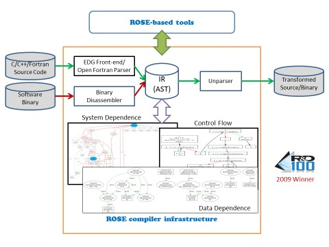

| Developed at Lawrence Livermore National Laboratory (LLNL), ROSE is an open-source compiler infrastructure to build source-to-source program transformation and analysis tools for large-scale C (C89 and C99), C++ (e.g., C++98 and C++11), UPC, Fortran (77, 95, 2003), OpenMP, Java, Python, PHP, and Binary applications. ROSE is used by a diverse range of users, from experienced compiler researchers to library and tool developers with minimal compiler expertise. ROSE is particularly well suited for building custom tools for static analysis, program optimization, arbitrary program transformation, domain-specific optimizations, complex loop optimizations, performance analysis, and cyber-security. |

|
Goal of Doxygen Docs
This Doxygen main page is deliberately kept minimal to simplify maintenance. Only information that depends on Doxygen is included here.
All other documentations of ROSE can be found at github ROSE wiki .
The documentation you're currently viewing may be for a specific version of ROSE. Documentation for the lastest releases can be found at http://doxygen.rosecompiler.org.